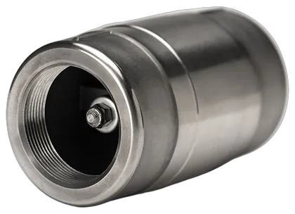
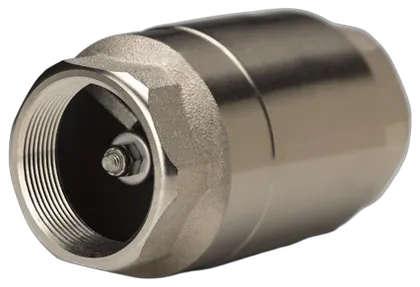
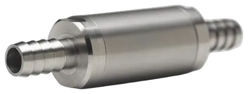
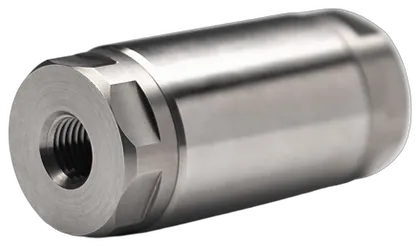
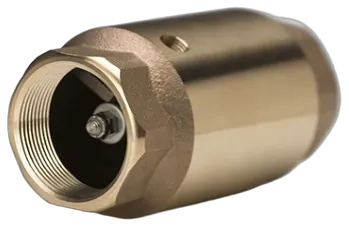
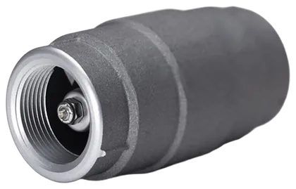
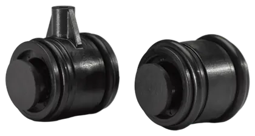
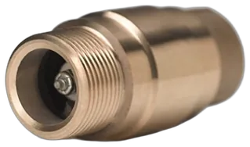

Find your valve
56 standard check and foot valves. Each one is individually machined, assembled with the one-piece poppet and tested twice so the casting and poppet are leak-free.

The standard line

Deluge Check ValveCheck Valve
For deluge systems

No. 200 Foot ValveFoot Valve
BronzeBuna-S seal
Air, Non-potable water
No. 201 Foot ValveFoot Valve
BronzeStainless Steel seal
Chemicals, Fuels, Non-potable water, Steam

No. 2330 Check ValveCheck Valve
Nickel-Plated BronzeBuna-S seal
Air, Non-potable water
No. 2375 Check ValveCheck Valve
Nickel-Plated BronzeBuna-N seal
Fuels, Hydraulic fluid
No. 2385 Check ValveCheck Valve
Nickel-Plated BronzeEPDM seal
Chemicals
No. 2395 Check ValveCheck Valve
Nickel-Plated BronzeViton seal
Chemicals, Food and beverage, Fuels, Hydraulic fluid
No. 2400 Check ValveCheck Valve
Nickel-Plated BronzeStainless Steel seal
Chemicals, Food and beverage, Fuels, Non-potable water, Steam
No. 2400 Check Valve British PipeCheck Valve
Nickel-Plated BronzeStainless Steel seal
Chemicals, Food and beverage, Fuels, Non-potable water, Steam British Threads
No. 2400 Check Valve British StraightCheck Valve
Nickel-Plated BronzeStainless Steel seal
Chemicals, Food and beverage, Fuels, Non-potable water, Steam British Threads
No. 275 Foot ValveFoot Valve
BronzeBuna-N seal
Fuels, Hydraulic fluid
No. 285 Foot ValveFoot Valve
BronzeEPDM seal
Chemicals
No. 295 Foot ValveFoot Valve
BronzeViton seal
Chemicals, Fuels, Hydraulic fluid
No. 300 Check ValveCheck Valve
BronzeBuna-S seal
Air, Non-potable water
No. 3300 Check ValveCheck Valve
303 StainlessBuna-S seal
Air, Drinking water, Non-potable water

No. 3365RB Check ValveCheck Valve
303 StainlessHNBR seal
Air, Chemicals, Fuels, Hydraulic fluid
No. 3375 Check ValveCheck Valve
303 StainlessBuna-N seal
Fuels, Hydraulic fluid
No. 3385 Check ValveCheck Valve
303 StainlessEPDM seal
Chemicals
No. 3385RB Check ValveCheck Valve
303 StainlessEPDM seal
Chemicals

No. 3385RB Hose Barb Check ValveCheck Valve
303 StainlessEPDM seal
Chemicals Hose Barb Ends
No. 3395 Check ValveCheck Valve
303 StainlessViton seal
Chemicals, Food and beverage, Fuels, Hydraulic fluid
No. 3395RB Check ValveCheck Valve
303 StainlessViton seal
Chemicals, Drinking water, Food and beverage, Fuels, Hydraulic fluid, Non-potable water
No. 3395RB Hose Barb Check ValveCheck Valve
303 StainlessViton seal
Chemicals, Drinking water, Food and beverage, Fuels, Hydraulic fluid, Non-potable water Hose Barb Ends

No. 3395RB JIC Check ValveCheck Valve
303 StainlessViton seal
Chemicals, Drinking water, Food and beverage, Fuels, Hydraulic fluid, Non-potable water JIC Flared Ends
No. 3400 Check ValveCheck Valve
303 StainlessStainless Steel seal
Chemicals, Drinking water, Food and beverage, Fuels, Hydraulic fluid, Non-potable water, Steam

No. 3400HP Check ValveCheck Valve
303 StainlessStainless Steel seal
Chemicals, Fuels, Hydraulic fluid, Steam High Pressure
No. 3400RB Check ValveCheck Valve
303 StainlessStainless Steel seal
Chemicals, Drinking water, Food and beverage, Fuels, Hydraulic fluid, Non-potable water, Steam
No. 3400RB Hose Barb Check ValveCheck Valve
303 StainlessStainless Steel seal
Chemicals, Drinking water, Food and beverage, Fuels, Hydraulic fluid, Non-potable water, Steam Hose Barb Ends
No. 3400RB JIC Check ValveCheck Valve
303 StainlessStainless Steel seal
Chemicals, Drinking water, Food and beverage, Fuels, Hydraulic fluid, Non-potable water, Steam JIC Flared Ends

No. 351 Check ValveCheck Valve
BronzeBuna-S seal
Non-potable water Single-Tapped
No. 352 Check ValveCheck Valve
BronzeBuna-S seal
Non-potable water Double-Tapped
No. 3640RB Check ValveCheck Valve
316 StainlessStainless Steel seal
Chemicals, Drinking water, Food and beverage, Fuels, Hydraulic fluid, Non-potable water, Steam
No. 3640RB Hose Barb Check ValveCheck Valve
316 StainlessStainless Steel seal
Chemicals, Drinking water, Food and beverage, Fuels, Hydraulic fluid, Non-potable water, Steam Hose Barb Ends
No. 3640RB JIC Check ValveCheck Valve
316 StainlessStainless Steel seal
Chemicals, Drinking water, Food and beverage, Fuels, Hydraulic fluid, Non-potable water, Steam JIC Flared Ends
No. 3695RB Check ValveCheck Valve
316 StainlessViton seal
Chemicals, Drinking water, Food and beverage, Fuels, Hydraulic fluid, Non-potable water
No. 3695RB Check Valve British PipeCheck Valve
316 StainlessViton seal
Chemicals, Drinking water, Food and beverage, Fuels, Hydraulic fluid British Threads
No. 3695RB Check Valve British StraightCheck Valve
316 StainlessViton seal
Chemicals, Drinking water, Food and beverage, Fuels, Hydraulic fluid British Threads
No. 3695RB Hose Barb Check ValveCheck Valve
316 StainlessViton seal
Chemicals, Drinking water, Food and beverage, Fuels, Hydraulic fluid, Non-potable water Hose Barb Ends
No. 3695RB JIC Check ValveCheck Valve
316 StainlessViton seal
Chemicals, Drinking water, Food and beverage, Fuels, Hydraulic fluid, Non-potable water JIC Flared Ends
No. 375 Check ValveCheck Valve
BronzeBuna-N seal
Fuels, Hydraulic fluid
No. 375 Check Valve British PipeCheck Valve
BronzeBuna-N seal
Fuels, Hydraulic fluid British Threads
No. 375 Check Valve British StraightCheck Valve
BronzeBuna-N seal
Fuels, Hydraulic fluid British Threads
No. 385 Check ValveCheck Valve
BronzeEPDM seal
Chemicals
No. 395 Check ValveCheck Valve
BronzeViton seal
Chemicals, Fuels, Hydraulic fluid

No. 400 Check ValveCheck Valve
BronzeStainless Steel seal
Chemicals, Fuels, Non-potable water, Steam
No. 400 Check Valve British PipeCheck Valve
BronzeStainless Steel seal
Chemicals, Fuels, Non-potable water, Steam British Threads
No. 400 Check Valve British StraightCheck Valve
BronzeStainless Steel seal
Chemicals, Fuels, Non-potable water, Steam British Threads

No. 5300 Check ValveCheck Valve
AluminumBuna-S seal
Drinking water, Non-potable water NSF Certified

No. 7300 Check ValveCheck Valve
PlasticBuna-S seal
Drinking water Water Conditioning
No. F200 Foot ValveFoot Valve
Lead-Free BronzeBuna-S seal
Drinking water NSF Certified
No. F2400 Check ValveCheck Valve
Lead-Free Bronze, Nickel-Plated BronzeStainless Steel seal
Drinking water, Food and beverage, Steam NSF Certified
No. F300 Check ValveCheck Valve
Lead-Free BronzeBuna-S seal
Drinking water NSF Certified

No. F325 Check ValveCheck Valve
Lead-Free BronzeBuna-S seal
Drinking water NSF Certified, Submersible Pumps
No. F351 Check ValveCheck Valve
Lead-Free BronzeBuna-S seal
Drinking water NSF Certified, Single-Tapped
No. F352 Check ValveCheck Valve
Lead-Free BronzeBuna-S seal
Drinking water Double-Tapped, NSF Certified
No. F400 Check ValveCheck Valve
Lead-Free BronzeStainless Steel seal
Drinking water, Steam NSF Certified
Prices, sizes and ordering for every model are on the online store at strataflo.com.
Four spec sheets, opened up
Dimensions, flow and materials exactly as published on each product page.
No. 300 Check Valve
All-purpose bronze check valve for cold and warm water, ethylene, glycol and air.
Specifications
| Part number | Pipe size | Flow (Cv) | Length | Diameter | Weight |
|---|---|---|---|---|---|
| 300-038 | 3/8" | 2 GPM | 2.63" | 1.16" | 0.50 lb. |
| 300-050 | 1/2" | 4 GPM | 2.69" | 1.40" | 0.45 lb. |
| 300-075 | 3/4" | 6 GPM | 3.31" | 1.62" | 0.80 lb. |
| 300-100 | 1" | 13 GPM | 3.69" | 2.00" | 1.20 lb. |
| 300-125 | 1-1/4" | 24 GPM | 4.57" | 2.41" | 1.90 lb. |
| 300-150 | 1-1/2" | 38 GPM | 4.88" | 2.69" | 2.35 lb. |
| 300-200 | 2" | 61 GPM | 5.56" | 3.34" | 3.40 lb. |
| 300-250 | 2-1/2" | 69 GPM | 6.79" | 3.81" | 7.15 lb. |
| 300-300-F | 3" | 185 GPM | 7.40" | 4.71" | 11.60 lb. |
| 300-400 | 4" | 205 GPM | 10.00" | 5.80" | 21.70 lb. |
- Body
- Cast bronze C84400
- Stem
- 303 stainless
- Poppet
- Buna-S rubber
- Spring
- 302 stainless
- Working pressure
- 400 psi
- Max. temperature
- 225°F
- Cracking pressure
- 1–2 lbs. (optional 1/2, 5 or 10)
- Origin
- Made in the USA
Spec sheet PDF for each part number, on strataflo.com
No. F300 Check Valve
Lead-free bronze, certified by NSF to contain less than 0.25% lead by weighted average, for drinking water.
Specifications
| Part number | Pipe size | Flow (Cv) | Length | Diameter | Weight |
|---|---|---|---|---|---|
| F300-038 | 3/8" | 2 GPM | 2.63" | 1.16" | 0.50 lb. |
| F300-050 | 1/2" | 4 GPM | 2.69" | 1.40" | 0.45 lb. |
| F300-075 | 3/4" | 6 GPM | 3.31" | 1.62" | 0.80 lb. |
| F300-100 | 1" | 13 GPM | 3.69" | 2.00" | 1.20 lb. |
| F300-125 | 1-1/4" | 24 GPM | 4.57" | 2.41" | 1.90 lb. |
| F300-150 | 1-1/2" | 38 GPM | 4.88" | 2.69" | 2.35 lb. |
| F300-200 | 2" | 61 GPM | 5.56" | 3.34" | 3.40 lb. |
| F300-250 | 2-1/2" | 69 GPM | 6.79" | 3.81" | 7.15 lb. |
| F300-300-F | 3" | 185 GPM | 7.40" | 4.71" | 11.60 lb. |
| F300-400 | 4" | 205 GPM | 10.00" | 5.80" | 21.70 lb. |
- Body
- Cast bronze C89833 or C87500
- Poppet
- Buna-S rubber
- Internals
- Stainless steel
- Working pressure
- 400 psi
- Max. temperature
- 225°F
- Cracking pressure
- 1–2 lbs. (optional 1/2, 5 or 10)
- Origin
- Made in the USA
Spec sheet PDF for each part number, on strataflo.com
No. 3400RB Check Valve
Solid 303 stainless bar with a machined stainless poppet, for food and beverage, biodiesel, hydraulics and aggressive fuels.
Specifications
| Part number | Pipe size | Flow (Cv) | Length | Diameter | Weight |
|---|---|---|---|---|---|
| 3400RB-025 | 1/4" | 1.1 GPM | 2.63" | 1.12" | 0.45 lb. |
| 3400RB-038 | 3/8" | 3.1 GPM | 2.63" | 1.12" | 0.45 lb. |
| 3400RB-050 | 1/2" | 3.8 GPM | 2.63" | 1.12" | 0.40 lb. |
| 3400RB-075 | 3/4" | 8.8 GPM | 3.31" | 1.24" | 0.55 lb. |
| 3400RB-100 | 1" | 11.0 GPM | 3.69" | 1.49" | 0.75 lb. |
Male NPT versions (suffix M) in the same sizes.
- Body
- 303 stainless
- Poppet
- 303 stainless, metal-to-metal seal
- Spring
- 302 stainless
- Working pressure
- 3000 psi
- Max. temperature
- 350°F
- Steam
- 125 lbs.
- Cracking pressure
- 1–2 lbs. (optional 1/2, 5 or 10)
- Origin
- Made in the USA
Spec sheet PDF for each part number, on strataflo.com
No. 5300 Check Valve
One-piece cast A356 aluminum, anodized, for irrigation and water. Independently tested for well depths to 1000 feet.
Specifications
| Part number | Pipe size | Flow (Cv) | Length | Diameter | Weight |
|---|---|---|---|---|---|
| 5300-100 | 1" | 10 GPM | 3.69" | 2.00" | 0.50 lb. |
| 5300-125 | 1-1/4" | 23 GPM | 4.57" | 2.41" | 0.80 lb. |
| 5300-150 | 1-1/2" | 31 GPM | 4.88" | 2.69" | 0.95 lb. |
| 5300-200 | 2" | 44 GPM | 5.56" | 3.34" | 1.45 lb. |
| 5300-300-F | 3" | 185 GPM | 7.40" | 4.71" | 4.25 lb. |
| 5300-400 | 4" | 204 GPM | 10.00" | 5.80" | 8.20 lb. |
| 5300-400-FLG | 4" flanged | 212 GPM | 11.00" | 9.00" | 11.50 lb. |
- Body
- A356 aluminum, anodized
- Poppet
- Buna-S rubber
- Spring
- 302 stainless
- Working pressure
- 400 psi
- Max. temperature
- 225°F
- Cracking pressure
- 1–2 lbs. (optional 1/2, 5 or 10)
- Origin
- Made in the USA
Spec sheet PDF for each part number, on strataflo.com
Cv is flow in gallons per minute at a 1 psi differential. NPT threaded unless noted.
Not sure which one?
The experienced technical support team will help you match body, seal and pressure to your application.
260-482-4366 sales@strataflo.com- Hours
- 8 A.M. to 4:30 P.M. Eastern, Monday to Thursday. Closed Friday.
- Special uses
- British threads, hose barb and JIC ends, single- and double-tapped, high pressure, submersible pumps, water conditioning, deluge.